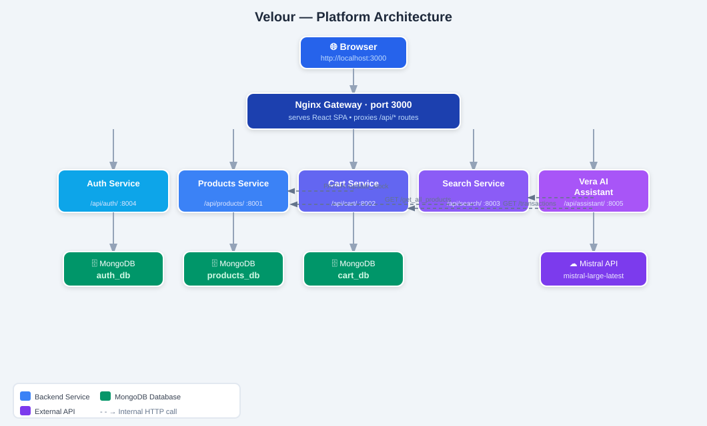

01 — Full-stack · AI Engineering
Velour — AI-Powered E-Commerce Microservices Platform
A complete UK online marketplace built on a microservices architecture, featuring Vera — an agentic AI shopping assistant. Five independent FastAPI services sit behind an Nginx API gateway with a React single-page frontend; each service owns its own MongoDB database, with JWT auth and atomic stock updates that stay correct under concurrent buyers.
Vera is a multi-agent system built on the Google Agent Development Kit with Mistral Large — a coordinator routes each message to Discovery, Order, Cart or Advisor specialists, and adding to the basket uses a human-in-the-loop two-turn confirmation so the model can never buy on your behalf by mistake.